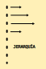

print("Pepeillo")PepeilloUn curso peculiar de Python
El lunes 3 de febrero de 2020 empezamos un curso de Python en el Severo Anchoa. Fueron poco días, creo que seis, pero muy aprovechados. Aquí se deja constancia de lo que hicimos.
Los profes del curso fueron:
Aquí está el enlace a la página del curso que, por cierto, ya no funciona.
El nombre viene de los Monty Python, pero no me acuerdo ahora muy bien de la historia. Las características principales son sus sintaxis muy limpia y la abundancia de bibliotecas (matplotlib, etc.)

Se puede descargar la distribución desde http://www.python.org que incluye el lenguaje y un editor sencillo de código: IDLE.
La versión antigua es la 2.7 y, en la fecha del curso, la moderna ya iba por la 3.7 (actualmente, cualquiera sabe). En el curso, nos centramos en la versión 3, claro.
Para manejar el código y su ejecución, nos recomendaron el entorno Anaconda que ya incluye Python, más un montón de cosas que luego no usamos. También su pueden usar otros editores, como Sublimetext, Visual Studio, etc.) pero al final me quedé con Spyder.
Lo primero que se me ocurrió, lo escribí en el terminal:
print("Pepeillo")PepeilloLa codificación de caracteres (ñ, ó, etc…) parece que, por defecto, viene en utf-8, lo que es un alivio en Linux.
En el editor se escribe como siempre y se ejecuta con F5 (todo) o (F9) una línea… pero aquí no creo que funcione. Hay muchas más opciones de ejecución. Otro ejemplo:
a = 19
type(a)intLa función
type()dice el tipo de variable (int, float, str, …)
Las variables se pueden crear en cualquier momento (en una sesión interactiva)
b = input("Introduce un número:")También se pueden definir variables con un tipo determinado:
float(1)1.0Numéricamente se hereda el tipo, a no ser que el resultado sea de distinto tipo (en python2 no) OJO.
Cualquier operación de división genera un float. Las otras (+, *, -) no. La potencia se hace con ** y el resto (¿módulo?) con %
2**385 % 32Parece que había que escribir runfile("/.......", wdir) pero a mí me funciona python3 [nombre_del_fichero]
Las cadenas se definen entre comillas "..." o entre apóstrofos '...' y éstos se pueden meter entre aquellas.
cadena = "murciano"Se puede acceder a trozos de cadena de forma muy sencilla, teniendo en cuenta que el primer elemento lleva el índice 0:
cadena[0] # el primer carácter'm'cadena[1:7] # menos el primero y el último'urcian'cadena[2:] # desde el tercero hasta el final'rciano'cadena[0:8:2] # sólo los pares (¿el cero es par?)'mrin'cadena[-1] # el último'o'cadena[8:0:-1] # ¡hacia atrás! pero se deja el primero...'onaicru'print con formatosSu puede usar en un lugar concreto, o con un formato concreto (para guardarlos en ficheros):
%s string%d entero%f flotantecadena = ("Te ha tocado un premio")
valor = 5.6
print("%s %d" % (cadena, valor))
print(cadena, valor)Te ha tocado un premio 5
Te ha tocado un premio 5.6print("número entero %d \nnúmero decimal %f \nnotación científica %e" % (1.6, 1.5, 2.5))número entero 1
número decimal 1.500000
notación científica 2.500000e+00